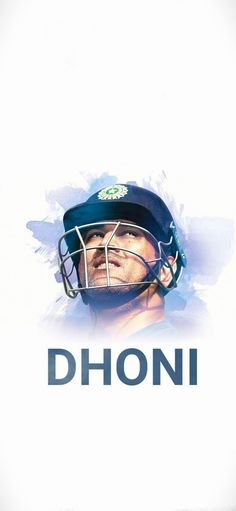
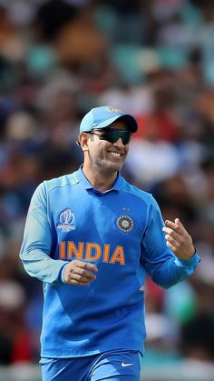

Mahendira Singh Dhoni, commonly known as MS Dhoni and Mahi, is an Indian cricket player and was a former captain of the Indian cricket team. Dhoni is a right-handed batsman. The Indian cricket team won the 2011 Cricket World Cup under his captainship

MAHENDIRA SING DHONI
☛ Mahendra Singh Dhoni ( born 7 July 1981) is an Indian former professional cricketer who was captain of the Indian national cricket team in limited-overs formats from 2007 to 2017 and in Test cricket from 2008 to 2014. He is a right-handed wicket-keeper batsman.[3] He led the team to three ICC trophies including the 2007 ICC World Twenty20, 2011 ICC Cricket World Cup and 2013 ICC Champions Trophy. Under his captaincy, India won the ACC Asia Cup two times, in 2010 and 2016. India also won ICC Test Championship Mace two times in 2010, 2011 and ICC ODI Shield for one time in 2013 under his leadership. He is considered as one of the greatest Captains and Wicket Keeper-Batsmen of all time.[4][5][6][7][8][9] Throughout his 15 year long international career, Dhoni has won several awards and accolades.
☛ In Indian domestic cricket he played for Bihar and Jharkhand Cricket team. He is the captain of chennai Super Kings (CSK) in the Indian Premier League. He captained the side to championships in the 2010, 2011, 2018 and 2021 editions of IPL league. Also under his captaincy Chennai Super Kings (CSK) Won Champions League T20 two times, in 2010 and 2014.
☛ Dhoni made his ODI debut on 23 December 2004, against Bangladesh in Chittagong,[14] and played his first Test a year later against Sri Lanka.[15] He played his first T20I also a year later against South Africa.[16] In 2007, he took over the ODI captaincy from Rahul Dravid and he also selected as T20I captain of India in this year.[17] In 2008, he was selected as Test Captain.[18] His captaincy record in this format was mixed, successfully leading India to a series win against New Zealand in 2008 and the Border-Gavaskar Trophy (home series in 2010 and 2013) against Australia while losing to Sri Lanka, Australia, England, and South Africa by big margins in away conditions
☛ He announced his retirement from Test format on 30 December 2014,[20] and stepped down as captain of T20Is and ODIs in 2017. On 15 August 2020, Dhoni retired from all formats of international cricket and continues to play in the IPL
Ms Dhoni Biography

☛ Mahendra Singh Dhoni or MS Dhoni is an Indian International Cricketer who has retired from International Cricket. MS Dhoni the only captain in the history of Cricket to win all the ICC trophies. The legendary cricketer celebrates his birthday on July 7. When he turned 40, fans and the cricket fraternity took to social media to wish Captain Cool on his birthday.
☛ Dhoni did his schooling at DAV Jawahar Vidya Mandir, Ranchi, Jharkhand and excelled in multiple sports such as badminton, football and cricket. He played as a goalkeeper for his football team and played cricket for a local club.
MS DHONI UNTOLD STORY PRESS MEET VIDEO GIVEN BELOW